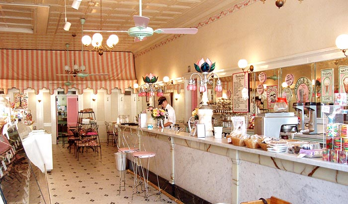
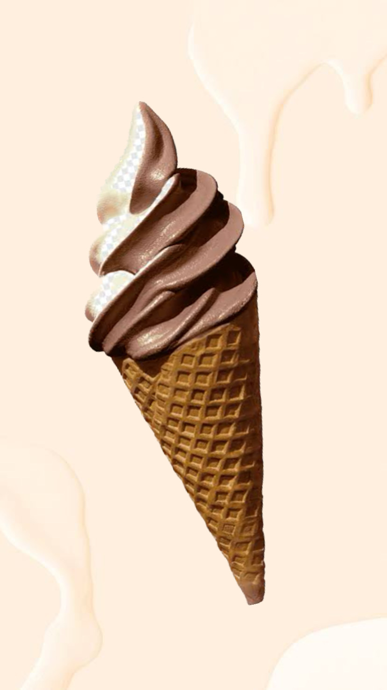
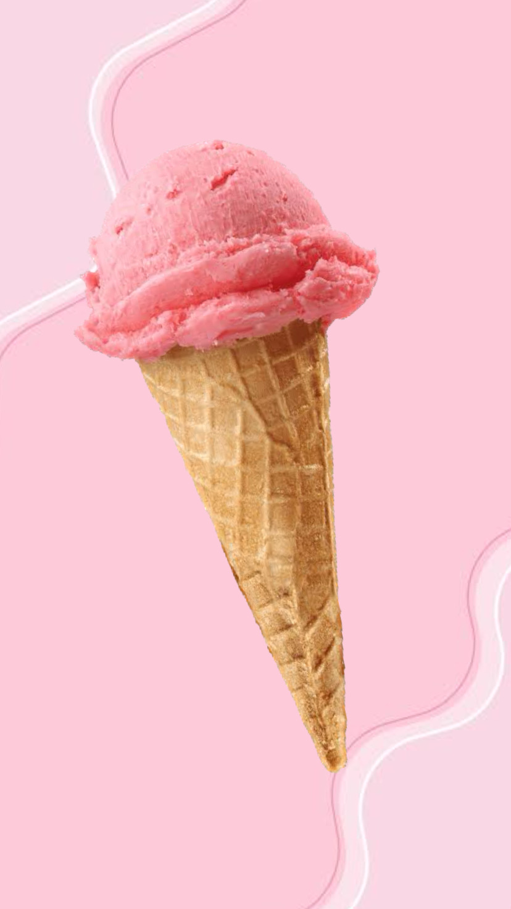
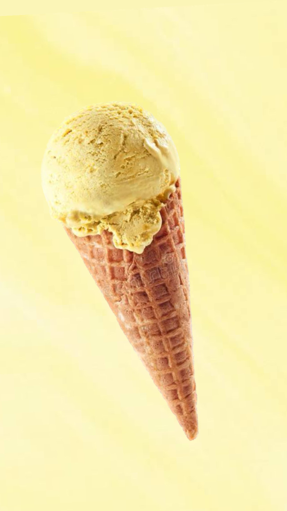

ABOUT US
WELCOME TO SWEET LIFE, WHERE YOU MAY INDULGE IN ONLY THE BEST AND TASTIEST ICE CREAMS THERE IS! WE AT SWEET LIFE THINK THAT ICE CREAM MAKES LIFE SWEETER. EACH SCOOP OF ICE CREAM IS LOVINGLY AND CAREFULLY MADE BY OUR DEDICATED GROUP OF ICE CREAM ARTISANS, WITH ONLY THE FINEST INGREDIENTS AND REVOLUTIONARY FLAVOURS.
ESTABLISHED IN 2005 BY MS BIANCO, SWEET LIFE BEGAN AS A HUMBLE ICE CREAM CART IN A LOCAL PARK, SERVING UP FROZEN DELIGHTS TO DELIGHTED CUSTOMERS. OVER THE YEARS, OUR PASSION FOR CRAFTING EXCEPTIONAL ICE CREAM LED US TO OPEN OUR FIRST BRICK-AND-MORTAR LOCATION IN 2010, BECOMING A BELOVED NEIGHBORHOOD STAPLE.
OUR LOCATION
MELBOURNE, AUSTRALIA'S LOVELY CAPITAL CITY, IS HOME TO SWEET LIFE ICE CREAM. THIS LOVELY ICE CREAM BUSINESS CAN BE FOUND IN ONE OF THE CITY'S THRIVING NEIGHBOURHOODS, SUCH THE BUSTLING UNION SQUARE OR THE WELL-KNOWN FISHERMAN'S WHARF, THOUGH ITS PRECISE LOCATION MAY CHANGE. THE SHOP'S IDEAL POSITION IN FLINDERS STREET ALLOWS RESIDENTS AND VISITORS ALIKE TO INDULGE IN MOUTHWATERING ICE CREAM FLAVOURS WHILE TAKING IN THE CITY'S DISTINCTIVE BEAUTY AND ATTRACTIONS.

OUR MOST POPULAR FLAVORS
-

CHOCO BLISS
-

PINK DELIGHT
-
LAVENDER FROST
-

MANGO TANGO